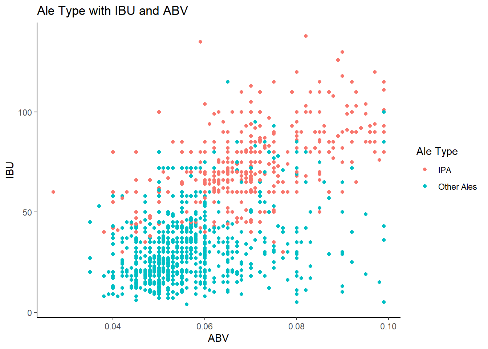

library(dplyr)
library(tidyr)
library(tidyverse)
library(ggplot2)
library(stringi)
library(stringr)
library(naniar)
library(maps)
library(mapproj)
library(mice) #mice
library(class) #knn
library(caret) #confusionMatrix
library(e1071) #Naive Bayes
theme_set(theme_classic()) #Set the theme for plots#Read in data from Beers.csv
Beers = read.csv(file.choose(),header = TRUE, na.strings = c(""," ","NA"))
#Read in data from Breweries.csv
Breweries = read.csv(file.choose(),header = TRUE, na.strings = c(""," ","NA"))
Breweries$State = as.factor(str_remove_all(Breweries$State, "\\s")) #Remove space preceeding Statedim(Beers)## [1] 2410 7#Beer data has 2410 observations and 7 columns:
#1. Name: Name of the beer
#2. Beer_ID: Unique identifier of the beer
#3. ABV: Alcohol by volume of the beer
#4. IBU: International Bitterness Units of the beer
#5. Brewery_id: Brewery identifier associated with the beer
#6. Style: Style of the beer
#7. Ounces: Ounces of the beerdim(Breweries)## [1] 558 4#Breweries data has 558 observations and 4 columns:
#1. Brew_ID: Unique identifier of the brewery
#2. Name: Name of the brewery
#3. City: City where brewery is located
#4. State: U.S. State where brewery is located##1. Number of breweries present in each state.
#Number of breweries by state
Breweries %>% group_by(State) %>% summarize(Count = n()) %>% arrange(desc(Count)) %>% print(n=Inf)## # A tibble: 51 x 2
## State Count
## <fct> <int>
## 1 CO 47
## 2 CA 39
## 3 MI 32
## 4 OR 29
## 5 TX 28
## 6 PA 25
## 7 MA 23
## 8 WA 23
## 9 IN 22
## 10 WI 20
## 11 NC 19
## 12 IL 18
## 13 NY 16
## 14 VA 16
## 15 FL 15
## 16 OH 15
## 17 MN 12
## 18 AZ 11
## 19 VT 10
## 20 ME 9
## 21 MO 9
## 22 MT 9
## 23 CT 8
## 24 AK 7
## 25 GA 7
## 26 MD 7
## 27 OK 6
## 28 IA 5
## 29 ID 5
## 30 LA 5
## 31 NE 5
## 32 RI 5
## 33 HI 4
## 34 KY 4
## 35 NM 4
## 36 SC 4
## 37 UT 4
## 38 WY 4
## 39 AL 3
## 40 KS 3
## 41 NH 3
## 42 NJ 3
## 43 TN 3
## 44 AR 2
## 45 DE 2
## 46 MS 2
## 47 NV 2
## 48 DC 1
## 49 ND 1
## 50 SD 1
## 51 WV 1#Plot the map of all States in dataset with gradient color based on count of breweries
lookup = data.frame(State_Cd = state.abb, State = state.name) #makes a data frame with State name and state code
colnames(Breweries)[4] = "State_Cd" # Change Column Name
Breweries2 = merge(Breweries,lookup,"State_Cd") #make one dataset with state names and abb
BreweriesMapData = count(Breweries2,State) #count up the occurance of each state.
colnames(BreweriesMapData)[2] = "Count" #change "n" to "Count"
BreweriesMapData$region <- tolower(BreweriesMapData$State)
BreweriesMapData2 = BreweriesMapData[-1]
states <- map_data("state")
map.df <- merge(states,BreweriesMapData2, by="region", all.x=T)
map.df <- map.df[order(map.df$order),]
Num_pos <- data.frame(region=tolower(state.name), long=state.center$x, lat=state.center$y)
Num_pos <- merge(Num_pos, BreweriesMapData2, by="region", all.x = TRUE)
#Plot
ggplot(map.df, aes(x=long,y=lat))+
geom_polygon(aes(group=group, fill=Count),colour="white")+
geom_text(data=Num_pos, aes(long, lat, label=Count)) +
scale_fill_gradient(low = "lightsteelblue1",
high = "Orange",
guide = "colourbar")+
ggtitle("Number of Breweries in each State") +
coord_map()#There are total 558 breweries in the US. CO has the most with 47 breweries. DC, ND, SD and WV are at the bottom with 1 brewery each.##2. Merge beer data with the breweries data. First 6 observations and the last 6 observations printed to check the merged file.
#Merge the data frames for Beers and Breweries
Budweiser = merge(Beers,Breweries, by.x = "Brewery_id", by.y = "Brew_ID")
#Assigning new names to the columns of the data frame
colnames(Budweiser) <- c('Brewery_ID','Beer','Beer_ID', 'ABV', 'IBU', 'Style', 'Ounces', 'Brewery', 'City', 'State')
#Rearranging columns in data frame
Budweiser = Budweiser %>% select(Brewery_ID, Brewery, Beer_ID, Beer, ABV, IBU, Style, Ounces, City, State)
str(Budweiser)## 'data.frame': 2410 obs. of 10 variables:
## $ Brewery_ID: int 1 1 1 1 1 1 2 2 2 2 ...
## $ Brewery : Factor w/ 551 levels "10 Barrel Brewing Company",..: 355 355 355 355 355 355 12 12 12 12 ...
## $ Beer_ID : int 2692 2691 2690 2689 2688 2687 2686 2685 2684 2683 ...
## $ Beer : Factor w/ 2305 levels "#001 Golden Amber Lager",..: 802 1258 2185 1640 1926 1525 458 1218 43 71 ...
## $ ABV : num 0.045 0.049 0.048 0.06 0.06 0.056 0.08 0.125 0.077 0.042 ...
## $ IBU : int 50 26 19 38 25 47 68 80 25 42 ...
## $ Style : Factor w/ 99 levels "Abbey Single Ale",..: 15 76 47 82 21 56 11 45 76 17 ...
## $ Ounces : num 16 16 16 16 16 16 16 16 16 16 ...
## $ City : Factor w/ 384 levels "Abingdon","Abita Springs",..: 228 228 228 228 228 228 200 200 200 200 ...
## $ State : Factor w/ 51 levels "AK","AL","AR",..: 24 24 24 24 24 24 18 18 18 18 ...#First 6 observations of merged dataset
head(Budweiser)## Brewery_ID Brewery Beer_ID Beer ABV IBU
## 1 1 NorthGate Brewing 2692 Get Together 0.045 50
## 2 1 NorthGate Brewing 2691 Maggie's Leap 0.049 26
## 3 1 NorthGate Brewing 2690 Wall's End 0.048 19
## 4 1 NorthGate Brewing 2689 Pumpion 0.060 38
## 5 1 NorthGate Brewing 2688 Stronghold 0.060 25
## 6 1 NorthGate Brewing 2687 Parapet ESB 0.056 47
## Style Ounces City State
## 1 American IPA 16 Minneapolis MN
## 2 Milk / Sweet Stout 16 Minneapolis MN
## 3 English Brown Ale 16 Minneapolis MN
## 4 Pumpkin Ale 16 Minneapolis MN
## 5 American Porter 16 Minneapolis MN
## 6 Extra Special / Strong Bitter (ESB) 16 Minneapolis MN#Last 6 observations of merged dataset
tail(Budweiser)## Brewery_ID Brewery Beer_ID
## 2405 556 Ukiah Brewing Company 98
## 2406 557 Butternuts Beer and Ale 52
## 2407 557 Butternuts Beer and Ale 51
## 2408 557 Butternuts Beer and Ale 50
## 2409 557 Butternuts Beer and Ale 49
## 2410 558 Sleeping Lady Brewing Company 30
## Beer ABV IBU Style
## 2405 Pilsner Ukiah 0.055 NA German Pilsener
## 2406 Heinnieweisse Weissebier 0.049 NA Hefeweizen
## 2407 Snapperhead IPA 0.068 NA American IPA
## 2408 Moo Thunder Stout 0.049 NA Milk / Sweet Stout
## 2409 Porkslap Pale Ale 0.043 NA American Pale Ale (APA)
## 2410 Urban Wilderness Pale Ale 0.049 NA English Pale Ale
## Ounces City State
## 2405 12 Ukiah CA
## 2406 12 Garrattsville NY
## 2407 12 Garrattsville NY
## 2408 12 Garrattsville NY
## 2409 12 Garrattsville NY
## 2410 12 Anchorage AK#After merging the beers and breweries datasets based on Brewery_ID from beers dataset and Brew_ID from breweries dataset, resulting dataset, Budweiser, now has 2410 observations with 10 columns.
#Head of the dataset displays first 6 rows of data and tail of dataset displays last 6 rows of data from this merged dataset.##3. Addressing the missing values in each column.
#Looking for missing values in dataset
gg_miss_var(Budweiser) + labs(title = 'Missing Values', x = 'Dataset Columns')## Warning: It is deprecated to specify `guide = FALSE` to remove a guide.
## Please use `guide = "none"` instead.sapply(Budweiser, function(x) sum(is.na(x)))## Brewery_ID Brewery Beer_ID Beer ABV IBU
## 0 0 0 0 62 1005
## Style Ounces City State
## 5 0 0 0#Missing values are found for IBU (1005), ABV (62) and Style (5). It is a significant number for IBU (41.7%), notable for ABV (2.57%) but insignificant for Style (0.2%), so, I decided to exclude the missing 'Style' data (5 rows) from Budweiser.#Excluding missing data for 'Style'
Budweiser = Budweiser %>% filter(!is.na(Style))
sapply(Budweiser, function(x) sum(is.na(x)))## Brewery_ID Brewery Beer_ID Beer ABV IBU
## 0 0 0 0 59 1002
## Style Ounces City State
## 0 0 0 0#After excluding 5 rows of missing 'Style' data, I notice that missing IBU and ABV are 1002 and 59 respectively as compared to 1005 and 62 earlier.#Assumption is that missing values of ABV and IBU are Missing At Random (MAR). Applying multiple imputation with function MICE() for ABV and IBU with covariant 'Style'.
#Multiple imputation for missing values of ABV and IBU
mice_mod <- mice(Budweiser[, c("IBU","Style")], method='pmm')##
## iter imp variable
## 1 1 IBU
## 1 2 IBU
## 1 3 IBU
## 1 4 IBU
## 1 5 IBU
## 2 1 IBU
## 2 2 IBU
## 2 3 IBU
## 2 4 IBU
## 2 5 IBU
## 3 1 IBU
## 3 2 IBU
## 3 3 IBU
## 3 4 IBU
## 3 5 IBU
## 4 1 IBU
## 4 2 IBU
## 4 3 IBU
## 4 4 IBU
## 4 5 IBU
## 5 1 IBU
## 5 2 IBU
## 5 3 IBU
## 5 4 IBU
## 5 5 IBU## Warning: Number of logged events: 25mice_complete1 <- complete(mice_mod)
mice_mod <- mice(Budweiser[, c("ABV","Style")], method='pmm')##
## iter imp variable
## 1 1 ABV
## 1 2 ABV
## 1 3 ABV
## 1 4 ABV
## 1 5 ABV
## 2 1 ABV
## 2 2 ABV
## 2 3 ABV
## 2 4 ABV
## 2 5 ABV
## 3 1 ABV
## 3 2 ABV
## 3 3 ABV
## 3 4 ABV
## 3 5 ABV
## 4 1 ABV
## 4 2 ABV
## 4 3 ABV
## 4 4 ABV
## 4 5 ABV
## 5 1 ABV
## 5 2 ABV
## 5 3 ABV
## 5 4 ABV
## 5 5 ABVmice_complete2 <- complete(mice_mod)
#Transfer the predicted missing values for ABV and IBU into the Budweiser dataset
Budweiser$IBU = mice_complete1$IBU
Budweiser$ABV = mice_complete2$ABV#Looking for missing values in dataset after imputation, none found
gg_miss_var(Budweiser) + labs(title = 'Missing Values', x = 'Dataset Columns')## Warning: It is deprecated to specify `guide = FALSE` to remove a guide.
## Please use `guide = "none"` instead.sapply(Budweiser, function(x) sum(is.na(x)))## Brewery_ID Brewery Beer_ID Beer ABV IBU
## 0 0 0 0 0 0
## Style Ounces City State
## 0 0 0 0#With these imputed values, dataset is now complete with no more missing values.##4. Median alcohol content and international bitterness unit for each state. Bar chart plots to compare.
#Median acohol content and international bitterness unit for each state
Budweiser %>% group_by(State) %>% summarize(medianABV = median(ABV), medianIBU = median(IBU), Count = n()) %>% print(n=Inf)## # A tibble: 51 x 4
## State medianABV medianIBU Count
## <fct> <dbl> <dbl> <int>
## 1 AK 0.056 40 25
## 2 AL 0.06 39.5 10
## 3 AR 0.052 29 5
## 4 AZ 0.0565 25 46
## 5 CA 0.058 40 183
## 6 CO 0.06 35 263
## 7 CT 0.06 40 27
## 8 DC 0.0625 25.5 8
## 9 DE 0.05 63 2
## 10 FL 0.0555 38 58
## 11 GA 0.055 35.5 16
## 12 HI 0.054 23 27
## 13 IA 0.0555 25.5 30
## 14 ID 0.0565 35 30
## 15 IL 0.058 35 91
## 16 IN 0.058 35 139
## 17 KS 0.05 20 23
## 18 KY 0.06 38 21
## 19 LA 0.052 28 19
## 20 MA 0.054 30 82
## 21 MD 0.058 36 21
## 22 ME 0.051 30 27
## 23 MI 0.062 30 162
## 24 MN 0.056 44 55
## 25 MO 0.052 28 42
## 26 MS 0.058 45 11
## 27 MT 0.0545 35 40
## 28 NC 0.057 30 59
## 29 ND 0.05 32 3
## 30 NE 0.055 30 25
## 31 NH 0.055 22.5 8
## 32 NJ 0.046 34.5 8
## 33 NM 0.061 52 14
## 34 NV 0.061 42 11
## 35 NY 0.055 40 74
## 36 OH 0.058 40 49
## 37 OK 0.06 35 19
## 38 OR 0.056 35 125
## 39 PA 0.0575 29 100
## 40 RI 0.055 27 27
## 41 SC 0.055 35.5 14
## 42 SD 0.06 30 7
## 43 TN 0.057 34.5 6
## 44 TX 0.055 33 128
## 45 UT 0.04 32 26
## 46 VA 0.0565 41 40
## 47 VT 0.055 42 27
## 48 WA 0.0555 35 68
## 49 WI 0.052 22 87
## 50 WV 0.062 57.5 2
## 51 WY 0.05 25 15##Plot a bar chart for median ABV for each State
#Arrange (order) data by descending median ABV
Budweiser_ABV = Budweiser %>% group_by(State) %>% summarize(medianABV = median(ABV), medianIBU = median(IBU), Count = n()) %>% arrange(desc(medianABV))
#Reorder level of State factor based on descending median ABV
Budweiser_ABV$State = factor(Budweiser_ABV$State, level = Budweiser_ABV$State[order(-Budweiser_ABV$medianABV)])
#column plot of ordered results
Budweiser_ABV %>% ggplot(aes(x = State, y = medianABV)) + geom_bar(stat="identity", width = 0.4, fill="tomato2") + labs(title = 'Median ABV by State', subtitle = 'Ordered highest to lowest', y = 'Median ABV') + theme(axis.text.x = element_text(angle=65, vjust=0.6))##Plot a bar chart for median IBU for each State
#Arrange (order) data by descending median IBU
Budweiser_IBU = Budweiser %>% group_by(State) %>% summarize(medianABV = median(ABV), medianIBU = median(IBU), Count = n()) %>% arrange(desc(medianIBU))
#Reorder level of State factor based on descending median IBU
Budweiser_IBU$State = factor(Budweiser_IBU$State, level = Budweiser_IBU$State[order(-Budweiser_IBU$medianIBU)])
#column plot of ordered results
Budweiser_IBU %>% ggplot(aes(x = State, y = medianIBU)) + geom_bar(stat="identity", width = 0.4, fill="tomato2") + labs(title = 'Median IBU by State', subtitle = 'Ordered highest to lowest', y = 'Median IBU') + theme(axis.text.x = element_text(angle=65, vjust=0.6))#Kentucky (KY) has the highest median alcohol content with 6.5% ABV and Utah (UT) has the lowest median alcohol content with 4% ABV.
#Delaware (DE) has the highest median IBU with 66 units and Kansas (KS) has the lowest median IBU with 20 units.##5. State with the maximum alcoholic (ABV) beer and with the most bitter (IBU) beer.
#State with maximum alcoholic (ABV) beer
Budweiser %>% select(State, ABV) %>% filter(ABV == max(Budweiser$ABV))## State ABV
## 1 CO 0.128#State with most bitter (IBU) beer
Budweiser %>% select(State, IBU) %>% filter(IBU == max(Budweiser$IBU))## State IBU
## 1 OR 138#Plot the states on US map
US_states <- map_data("state")
colorado = US_states %>% filter(region == "colorado")
Oregon = US_states %>% filter(region == "oregon")
ggplot() +
geom_polygon(data = US_states, aes(x = long, y = lat, group = group),colour="white", fill="grey40") +
geom_polygon(data = colorado, aes(x=long, y=lat, group = group), fill = "orange") +
geom_polygon(data = Oregon, aes(x=long, y=lat, group = group),fill = "lightsteelblue") +
coord_quickmap()#Colorado (CO) has the maximum alcoholic beer with 12.8% ABV.
#Oregon (OR) has the most bitter beer with 138 units.##6. Summary statistics and distribution of the ABV.
#Summary statistics for ABV
summary(Budweiser$ABV)## Min. 1st Qu. Median Mean 3rd Qu. Max.
## 0.00100 0.05000 0.05600 0.05972 0.06700 0.12800#The lowest ABV is 0.1%, the highest is 12.8%. The Mean is 5.98% and the Median value is 5.6%.#Plot to visualize the distribution
Budweiser %>% ggplot(aes(x = ABV)) + geom_histogram(bins = 50, fill = "orange") + labs(title = 'AVB Distribution', x = 'Alcohol by Volume (ABV)', y = "Count of Beers") + geom_vline(xintercept = median(Budweiser$ABV), color ="lightsteelblue", size = 2) + geom_vline(xintercept = mean(Budweiser$ABV), color = "black", linetype = "dotted", size = 1)#Right skewedness for ABV indicates that more beers are produced with lesser alcohol by volume of the beer.#AVB Distribution by Container
Budweiser %>% ggplot(aes(x = as.factor(Ounces), y = ABV)) + geom_boxplot(fill = "orange") + labs(title = 'AVB Distribution by Container', x = 'Fluid Ounces', y = "Alcohol by Volume (ABV)")#There are only maybe a handful of beers that come in 8.4 ounce and 16.9 ounce sizes and looks like they are strong beers. However, the 12 ounce containers have the lowest ABV median.##7. Relationship between the bitterness of the beer and its alcoholic content shown by a scatter plot.
#Scatter plot between ABV and IBU
Budweiser %>% ggplot(aes(x = ABV, y = IBU)) + geom_point() + geom_smooth(colour = "orange1") + labs(title = 'Relationship Between ABV and IBU', x = 'Alcohol by Volume (ABV)' , y = 'International Bitterness Unit (IBU)')## `geom_smooth()` using method = 'gam' and formula 'y ~ s(x, bs = "cs")'#Plot doesn't show an apparent relationship between ABV and IBU. It doesn't show that ABV increases for a higher IBU or vice versa.##8. KNN classification to investigate the difference with respect to IBU and ABV between IPAs (India Pale Ales) and other types of Ale.
#Create a dataset only for beers with 'Ale' or 'IPA' in their name from the Budweiser dataset
Budweiser_Ale = Budweiser %>% filter(str_detect(Style, "Ale") | str_detect(Style, "IPA"))
#Identify and label these beers as 'IPA' or 'Other Ales' in a new column
Budweiser_Ale = Budweiser_Ale %>%
mutate(Style_Ale = case_when(
str_detect(Style, "India Pale Ale") | str_detect(Style, "IPA") ~ "IPA",
TRUE ~ "Other Ales")) %>%
mutate(Style_Ale = factor(Style_Ale, levels = c("IPA", "Other Ales")))
#Plot indicating beer type with their ABV and IBU
Budweiser_Ale %>% ggplot(aes(x = ABV, y = IBU, color = Style_Ale)) + geom_point() + labs(title = 'Ale Type with IBU and ABV', color = 'Ale Type')
#IPAs and Other Ales form clusters in terms of their ABV and IBU values.#k-NN: Loop for many k and one training/test partition
set.seed(7) #Set the seed
numks = 30 #Value for k (1 to 30)
splitPerc = .70 #Training/Test split Percentage
#Dataframe to store statistics - accuracy, sensitivity and specificity for each k value
Ale_Stat = data.frame(accuracy = numeric(30), sensitivity = numeric(30), specificity = numeric(30), positive_class = character(30), k = numeric(30))
trainIndices = sample(1:dim(Budweiser_Ale)[1],round(splitPerc * dim(Budweiser_Ale)[1]))
train = Budweiser_Ale[trainIndices,]
test = Budweiser_Ale[-trainIndices,]
for(i in 1:numks)
{
classifications = knn(train[,c(5,6)],test[,c(5,6)],train$Style_Ale,prob = TRUE, k = i)
CM = confusionMatrix(table(classifications,test$Style_Ale))
CM
Ale_Stat$accuracy[i] = CM$overall[1]
Ale_Stat$sensitivity[i] = CM$byClass[1]
Ale_Stat$specificity[i] = CM$byClass[2]
Ale_Stat$positive_class = CM$positive
Ale_Stat$k[i] = i
}
#Reshape data frame from wide to long format
Ale_ggp <- data.frame(x = Ale_Stat$k,
y = c(Ale_Stat$accuracy, Ale_Stat$sensitivity, Ale_Stat$specificity),
Statistic = c(rep("Accuracy", nrow(Ale_Stat)),
rep("Sensitivity", nrow(Ale_Stat)),
rep("Specificity", nrow(Ale_Stat))))
#Plot the Statistics for k-value
ggplot(Ale_ggp, aes(x, y, col = Statistic)) + geom_line() + labs(title = 'Statistics vs k-value', x = 'k-value' , y = 'Statistical Value') + scale_x_continuous(breaks = seq(0,30,5)) + scale_y_continuous(breaks = seq(0,.95,.02)) + theme_grey()#Find the k-value with maximum accuracy level
Ale_Stat[which.max(Ale_Stat$accuracy),]## accuracy sensitivity specificity positive_class k
## 6 0.8956522 0.8571429 0.9192982 IPA 6#Mean Statistical values for k-values from 1 to 30
mean(Ale_Stat$accuracy)## [1] 0.8716667mean(Ale_Stat$sensitivity)## [1] 0.816381mean(Ale_Stat$specificity)## [1] 0.905614#Based on ABV and IBU for the beers in this dataset, the Machine Learning k-NN Classification model classifies a beer with about 87% accuracy whether it's an IPA or other type of beer. The best k-value is 7 with highest accuracy of 89%, positive class as IPA.
classifications = knn(train[,c(5,6)],test[,c(5,6)],train$Style_Ale,prob = TRUE, k = 15)
CM = confusionMatrix(table(classifications,test$Style_Ale))
CM## Confusion Matrix and Statistics
##
##
## classifications IPA Other Ales
## IPA 142 22
## Other Ales 33 263
##
## Accuracy : 0.8804
## 95% CI : (0.8472, 0.9086)
## No Information Rate : 0.6196
## P-Value [Acc > NIR] : <2e-16
##
## Kappa : 0.7433
##
## Mcnemar's Test P-Value : 0.1775
##
## Sensitivity : 0.8114
## Specificity : 0.9228
## Pos Pred Value : 0.8659
## Neg Pred Value : 0.8885
## Prevalence : 0.3804
## Detection Rate : 0.3087
## Detection Prevalence : 0.3565
## Balanced Accuracy : 0.8671
##
## 'Positive' Class : IPA
## #Naive Bayes
#naiveBayes()
model = naiveBayes(train[,c(5,6)],train$Style_Ale,laplace = 1)
CM = confusionMatrix(table(predict(model,test[,c(5,6)]),test$Style_Ale))
CM## Confusion Matrix and Statistics
##
##
## IPA Other Ales
## IPA 133 29
## Other Ales 42 256
##
## Accuracy : 0.8457
## 95% CI : (0.8093, 0.8774)
## No Information Rate : 0.6196
## P-Value [Acc > NIR] : <2e-16
##
## Kappa : 0.6678
##
## Mcnemar's Test P-Value : 0.1544
##
## Sensitivity : 0.7600
## Specificity : 0.8982
## Pos Pred Value : 0.8210
## Neg Pred Value : 0.8591
## Prevalence : 0.3804
## Detection Rate : 0.2891
## Detection Prevalence : 0.3522
## Balanced Accuracy : 0.8291
##
## 'Positive' Class : IPA
## #Another Machine Learning Naive Bayes Classification model compares with the k-NN with providing about 85% accuracy and positive classification as IPA.#9.1 Insight - Which top 10 cities have the most number of breweries?
#Create another column in Breweries dataset with City, Sate combination
Breweries$City_State = paste0(Breweries$City, ",", Breweries$State_Cd)
#Top 10 cities with most breweries
Breweries_Cty = Breweries %>% group_by(City_State) %>% summarize(Count = n()) %>% arrange(desc(Count)) %>% head(n=10)
#Reorder level of City, State combo factor based on descending brewery count
Breweries_Cty$City_State = factor(Breweries_Cty$City_State, level = Breweries_Cty$City_State [order(-Breweries_Cty$Count)])
##Plot a bar chart for City, State combo for each State
Breweries_Cty %>% ggplot(aes(x = City_State, y = Count)) + geom_bar(stat="identity", width = 0.5, fill="orange") + labs(title = 'Top 10 Cities with Most Breweries', x = 'City', y = 'Breweries') + scale_x_discrete(labels = function(x) str_wrap(x, width = 10))#Portland, OR came up top in the United States with 11 breweries and San Francisco, CA gets the 10th spot with 5 breweries. Boulder, CO, Chicago, IL and Seattle, WA tie with 9 breweries each.#9.2 Insight - Which top 10 breweries produce the most number of beers?
#Create another column in Budweiser dataset with Brewery, City, Sate combination
Budweiser$Brew_Cty_State = paste0(Budweiser$Brewery," ",Budweiser$City,",", Budweiser$State)
#Top 10 breweries that produce the most number of beers
Budweiser_Brew = Budweiser %>% group_by(Brew_Cty_State) %>% summarize(Count = n()) %>% arrange(desc(Count)) %>% head(n=10)
#Reorder level of City, State combo factor based on descending brewery count
Budweiser_Brew$Brew_Cty_State = factor(Budweiser_Brew$Brew_Cty_State, level = Budweiser_Brew$Brew_Cty_State [order(-Budweiser_Brew$Count)])
##Plot a bar chart for City, State combo for each State
Budweiser_Brew %>% ggplot(aes(x = Brew_Cty_State, y = Count)) + geom_bar(stat="identity", width = 0.5, fill="orange") + labs(title = 'Top 10 Breweries with Most Beers', x = 'Brewery', y = 'Beers') + scale_x_discrete(labels = function(x) str_wrap(x, width = 10))#Brewery Vivant in Grand Rapids, MI came up top producing 62 unique beers and Bonfire Brewing Company in Eagle, CO claimed 10th spot with producing 19 different beers.